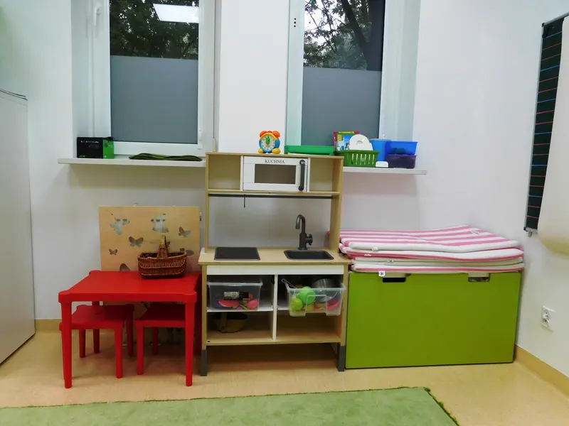
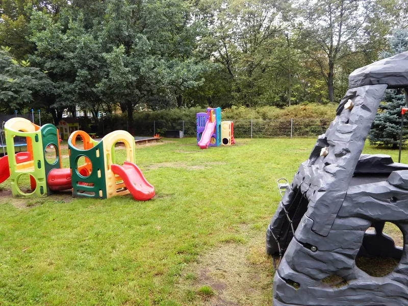

Pierwsze kroki
Adaptacja w przedszkolu
Pierwsze dni w przedszkolu to ważny moment dla całej rodziny. Organizujemy bezpłatne, sobotnie zajęcia adaptacyjne, dzięki którym dziecko spokojnie pozna sale, kadrę i rytm dnia — w bezpiecznym towarzystwie rodzica.
Łagodny start
Spokojne wejście w przedszkolne życie
Adaptacja to czas, w którym dziecko stopniowo oswaja się z nowym miejscem, opiekunami i rówieśnikami. Robimy wszystko, by ten moment był łagodny — bez pośpiechu, z poszanowaniem tempa każdego malucha i w bliskiej współpracy z rodzicami.
Jak to wygląda
Zajęcia adaptacyjne krok po kroku
- Dziecko poznaje sale, zabawki i kącik, w którym będzie spędzać czas
- Spotyka nauczycieli i specjalistów w spokojnej, kameralnej atmosferze
- Poznaje rytm dnia i pierwsze przedszkolne rytuały, bawiąc się z rówieśnikami
- Rodzic jest blisko — daje dziecku poczucie bezpieczeństwa

Dla rodziców
Jak przygotować dziecko do przedszkola
Kilka prostych kroków sprawi, że pierwsze dni będą spokojniejsze — dla dziecka i dla Was.
Mów pozytywnie
Opowiadaj o przedszkolu z radością — buduj dobre skojarzenia z nowym miejscem.
Ćwiczcie samodzielność
Jedzenie, ubieranie i korzystanie z toalety — drobne umiejętności dodają dziecku pewności.
Ustal rytuał pożegnania
Krótkie, czułe i przewidywalne pożegnanie pomaga dziecku poczuć się bezpiecznie.
Trenujcie krótkie rozłąki
Czas u babci czy znajomych oswaja z rozstaniem i powrotem rodzica.
Zadbajcie o rytm dnia
Stałe pory snu i posiłków ułatwiają dziecku wejście w przedszkolny plan dnia.
Pozwól zabrać przytulankę
Ulubiona maskotka to kawałek domu, który daje poczucie bezpieczeństwa.

Jesteśmy z Wami
Jak wspieramy rodziców
- Stały kontakt z wychowawcą i bieżące informacje o dziecku
- Konsultacje z psychologiem i specjalistami dostępnymi na miejscu
- Stopniowe wydłużanie pobytu, dostosowane do tempa dziecka
- Bezpieczny, ogrodzony teren i duży plac zabaw, na którym dziecko czuje się swobodnie
Terminy
Kiedy odbywają się zajęcia adaptacyjne
Bezpłatne zajęcia adaptacyjne organizujemy w soboty dla najmłodszego rocznika i rodziców. Terminy na nowy rok szkolny ogłaszamy na naszym profilu na Facebooku oraz na stronie. Skontaktuj się z nami, aby poznać najbliższy termin i zarezerwować miejsce.
Pytania rodziców
Najczęstsze pytania o adaptację
Czy zajęcia adaptacyjne są płatne?
Nie. Sobotnie zajęcia adaptacyjne są bezpłatne — to nasz sposób na łagodne, spokojne wejście dziecka w życie przedszkola.
Kiedy odbywają się zajęcia?
W soboty. Terminy na nowy rok szkolny ogłaszamy na Facebooku i na stronie internetowej. Zadzwoń lub napisz, a podamy najbliższy termin.
Czy rodzic jest obecny podczas adaptacji?
Tak. Na zajęciach adaptacyjnych dziecko poznaje sale, kadrę i rytm dnia w bezpiecznym towarzystwie rodzica.
Dla jakiego wieku są zajęcia?
Kierujemy je do dzieci z najmłodszego rocznika, które rozpoczynają edukację przedszkolną, oraz ich rodziców.